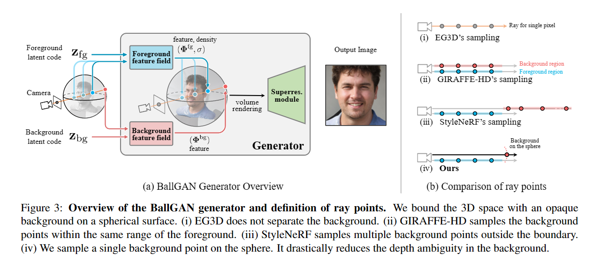

论文随记（2024.1.4-1.5）
1. BallGAN: 3D-aware Image Synthesis with a Spherical Background

BallGAN生成器概述和射线点的定义。我们将3D空间与球面上的不透明背景绑定在一起。（i） EG3D不分离背景。（ii）GIRAFFE-HD对前景的相同范围内的背景点进行采样。（iii）StyleNeRF对边界外的多个背景点进行采样。（iv）我们对球体上的单个背景点进行采样。它大大减少了背景中的深度模糊性。
- 通过设计，BallGAN在没有额外监督的情况下提供了清晰的前景-背景分离。
- 对于内容创建，它可以在不进行后处理的情况下将生成的3D前景插入任意视点。我们作为球面的背景表示通常适用于任何生成器架构或前台表示。
- BallGAN允许StyleNeRF在更高分辨率的CompCars上进行训练，并实现大的FID提升，这一点值得注意，因为数据集由于其复杂的背景而具有挑战性。
- 更重要的是，与EG3D相比，BallGAN不仅增强了多视图一致性、姿态精度和深度重建，而且它还忠实地捕捉了3D空间中易于在2D图像中表示但难以在3D中建模的精细细节
- 我们假设生成无边界的3D场景过于复杂，无法依靠有限的指南来生成逼真的2D图像。为了解决这一挑战，BallGAN将场景界定为一个球，并将背景近似为不透明的球面。我们希望它能减轻产生正确形状背景的负担，因为形状是固定在球上的。我们的生成器由前景和背景的两个骨干网络组成。这些网络的表示通过我们修改的体积渲染方程进行渲染，以合成图像），并使用GAN目标和辅助规则进行训练。
前后景分离分别训练。将背景表示为球面，我们的方法自然地提供了仅前景的3D合成，便于更容易地创建3D内容。此外，它还提高了3D感知GANs的前景几何形状和在具有复杂背景的数据集上的训练稳定性
2. EpiGRAF: Rethinking training of 3D GANs
Project：https://universome.github.io/epigraf
生成器（左）完全基于NeRF，并使用带有StyleGAN2解码器（F）的三平面主干（但没有2D上采样器）。
鉴别器（右）也基于StyleGAN2（D），但受小块位置和比例参数的调制。我们将逐片优化用于训练和我们提出的Beta尺度采样，这使我们的模型比基于上采样器的架构更快收敛2-3倍，尽管生成器建模几何结构为全分辨率。
1. 生成器：使用纯 NeRF 作为生成器G，并利用三平面表示作为骨干。
1）mapping network M：将随机噪声转换为潜在向量 z -> w (512)。
2）synthesis network S：将潜在向量 w 合成三个32维度的特征平面 P，w -> P。
3）tri-planes decoder network F：将空间坐标 x 和三平面 P 作为输入生成 RGB 颜色 c 和密度 sigma（tiny MLP）。
2. 辨别器：建立在 StyleGAN2 之上，采用超网格（Hypernetwork）H 调制鉴别器体系结构来操作具有连续不同尺寸的块。
1）两层MLP-tanh，输入为patch尺度 s 以及裁剪偏移量，输出为调制参数，然后将这些参数（A）与辨别器D相乘。
2）每次迭代，输入分辨率为 r * r 的随机尺度到辨别器D，并使用随机偏移提取块图像。
3）将均匀尺度采样分布替换为 Beta 尺度采样分布。
3. 重点:
首先，我们设计了一个对位置和尺度敏感的鉴别器，用于处理不同比例和空间位置的图像块。其次，我们基于退火的 Beta 分布修改了图像块采样策略，以稳定训练并加速收敛。
通过去除上采样器并使用一个简单的逐块优化方案，可以构建一个具有更好图像质量、更快训练速度且没有上述限制的3D生成器。（提高生成图像的分辨率）
改进
GRAF中的基于nerf的使用 patch-wise 的GANs训练，不是在全尺寸图像上训练生成模型，而是在小型随机裁剪上训练生成模型。EpiGRAF的改进：通过使其更适合操作可变尺度和位置的图像块来重新设计鉴别器，使用==超网络调制==鉴别器的过滤器，该网络预测从给定的补丁尺度和位置抑制或强化哪些过滤器。
将随机尺度采样策略从退火均匀更改为退火的 beta 分布。（这种方式，模型从训练开始就立即学习高频细节，并在‘生长’结束后更加专注于结构）
在随机尺度 r * r 的块上训练模型，而不是使用 R * R 的完整图像，尺度 \(s \in [\frac{r}{R},1]\) 从时变分布 \(s \sim p_t(s)\) 中随机采样。
不使用视图方向条件，因为它会恶化 GAN 中的多视图一致性，这些一致性是在 RGB 数据集上训练的，每个实例都有一个视图。